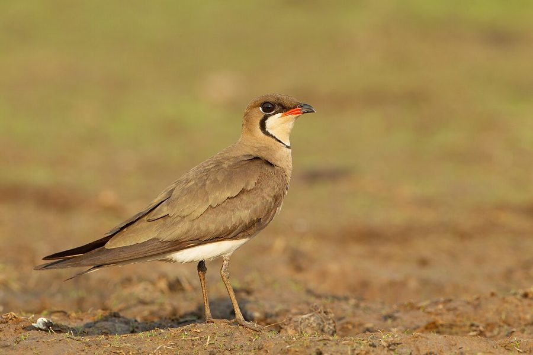

ओरिएंटल प्रैटिंकोलOriental Pratincole
Glareola maldivarum · Glareolidae · BRD-0373

- Scientific name वैज्ञानिक नाम
- Glareola maldivarum J. R. Forster, 1795
- Family कुल
- Glareolidae
- Hindi हिंदी
- ओरिएंटल प्रैटिंकोल
- Local names स्थानीय नाम
- oriental pratincole, badi pratincole
- Status here यहाँ की स्थिति
- native
- Movement आवागमन
- Migrant
- Known from कहाँ दर्ज
- Others have published records from the Basti–Ayodhya districts बस्ती–अयोध्या के ज़िलों से दूसरों के प्रकाशित अभिलेख
- IUCN IUCN
- LC
- Review समीक्षा
- not yet reviewed
When to look कब देखें
Migrant प्रवासी. Expected mainly in February, May, September. मुख्यतः फ़रवरी, मई, सितंबर में अपेक्षित।
Breeds from India, Ceylon, and Burma to Eastern Siberia; moves about locally within its range (Baker 1929). GBIF records in Uttar Pradesh fall in February, May, and September. All migrants and visitors →
Tell it apart from इनसे अलग पहचानें
ओरिएंटल प्रैटिंकोल / Oriental Pratincole
Glareola maldivarum J. R. Forster, 1795 — Glareolidae
ओरिएंटल प्रैटिंकोल — अबबील जैसा दिखने वाला अनोखा जलपक्षी जो नदियों के रेतीले किनारों, दलदलों और जोते हुए खेतों के ऊपर तेजी से उड़ता है। इसके लंबे नुकीले डैने, कांटेदार पूंछ और गले पर एक पतली काली माला जैसी रेखा होती है। यह शाम के समय हवा में उड़ते हुए कीड़े-मकोड़े पकड़ता है। हमारे क्षेत्र में यह प्रवासी के रूप में कभी-कभार दिखाई देता है।
Quick Identification त्वरित पहचान
| Feature | Description |
|---|---|
| Habit | Terns- or swallow-like plover hawking aerial insects over water or resting on bare mudbanks |
| Upperparts | Olive-brown upperparts, darker both above and below than Collared Pratincole; white upper tail-coverts (Baker 1929, pp. 90–91) |
| Throat & Gorget | Pale rufous-buff throat neatly bordered by a narrow black gorget line curving down from eye (Baker 1929, p. 90) |
| Wings & Underwing | Long pointed dark brown wings; chestnut axillaries and underwing-coverts (Baker 1929, p. 90) |
| Tail Pattern | Short tail, much less deeply forked than Collared Pratincole, with white base and dark terminal band (Baker 1929, p. 91) |
| Bare Parts | Bill black, base and gape coral-red; iris dark brown; legs and feet dusky blackish-brown (Baker 1929, p. 91) |
Field tip: Look for a swallow-like bird standing upright on a dry sandbank, revealing chestnut underwings and a white rump when it takes flight (Baker 1929, p. 91).
हिंदी — कैसे पहचानें:
अबबील जैसे नुकीले डैने, गले पर काली कंठी, चोंच का लाल आधार और उड़ते समय डैनों के नीचे कत्थई रंग देखकर इसे पहचाना जाता है (बेकर 1929)।
Morphology आकारिकी
Measurements as given by Baker (1929) for the Large Indian Pratincole (Glareola maldivarum):
| Measurement | Range |
|---|---|
| Biometrics | Wing 173 to 191 mm. ; tail, longest outermost feathers 71 to 85 mm., shortest central feathers 52 to 62 mm.; tarsus 30 to 33 mm. ; culmen 13 to 15 mm. (Baker 1929) |
Stuart Baker (1929, pp. 90–91) detailed the species under the Large Indian Pratincole, noting that it "Differs from the preceding bird in being much darker both above and below and in having comparatively less white on the tail. The tail itself is much shorter and much less deeply forked."
Colours of soft parts: "Colours of soft parts as in G . pr a tin cola" (Baker 1929, p. 91), having iris dark brown; bill black, base and gape coral-red; legs and feet dusky blackish-brown.
Vocalisations: Utters a sharp, tern-like flight call chik-chik or a rapid trilling kik-kik-kik when circling over water bodies or flushed from ground perches (Grimmett et al. 2011).
हिंदी:
बेकर (1929) के अनुसार डैने 173 से 191 मिमी, पूंछ के बाहरी पंख 71 से 85 मिमी व मध्य पंख 52 से 62 मिमी, टार्सस 30 से 33 मिमी और चोंच 13 से 15 मिमी होती है। चोंच का आधार लाल, आंखें भूरी और पैर काले-भूरे होते हैं।
Behaviour & Ecology व्यवहार और पारिस्थितिकी
Stuart Baker (1929, p. 91) recorded the habits of the Large Indian Pratincole: "These differ in no way from those of the Collared Pratincole. This species seems to move about locally a great deal. Their breeding colonies in Assam were occupied for a year or two and then the birds disappeared altogether, only to reappear some years later a short distance away."
Flight is swift, buoyant, and graceful, characterized by sharp turns, rapid twists, and glides that mimic large swallows or terns (Ali & Ripley 1987).
हिंदी:
बेकर (1929) के अनुसार इसका स्वभाव कॉलर वाले प्रैटिंकोल जैसा ही होता है और यह स्थानीय स्तर पर काफी भ्रमण करता है। असम में इसकी प्रजनन बस्तियां एक-दो साल बाद स्थान बदल लेती थीं।
Life Cycle / Phenology जीवन चक्र
Baker (1929, p. 91) recorded the breeding phenology:
"This Pratincole breeds in colonies from March to June, laying its two or three eggs on the ground, with no nest, on mud-flats, burnt rice-fields or in the beds of creeks and rivers."
In Uttar Pradesh, published GBIF occurrence records fall in February, May, and September, reflecting summer passage and nomadic movements across Gangetic river channels.
हिंदी:
बेकर (1929) के अनुसार यह मार्च से जून में कीचड़ के मैदानों, जले हुए धान के खेतों या नदी के किनारों पर जमीन पर बिना घोंसले के दो या तीन अंडे देता है। उत्तर प्रदेश में इसके रिकॉर्ड फरवरी, मई और सितंबर में मिलते हैं।
Host Plants or Prey आहार
Baker (1929, p. 91) noted that its habits resemble those of the Collared Pratincole, which feeds on flying insects including beetles, grasshoppers, and other aerial invertebrates hawked over water and open floodplains.
हिंदी:
बेकर (1929) के अनुसार इसका आहार उड़ते हुए भृंग (बीटल), टिड्डे और छोटे उड़ने वाले कीट हैं।
Predators / Natural Enemies शत्रु
No source opened for this atlas names a specific natural predator of the Oriental Pratincole in Uttar Pradesh.
हिंदी:
इस एटलस के लिए खोले गए किसी भी स्रोत में इसके किसी विशिष्ट शिकारी का उल्लेख नहीं है।
Agricultural / Human Relevance कृषि प्रासंगिकता
Feeds on flying insect pests over agricultural fields and riverbanks, consuming beetles and grasshoppers. Protected under the Wildlife (Protection) Act, 1972.
हिंदी:
यह फसलों को कोई नुकसान नहीं पहुंचाता बल्कि खेतों के ऊपर उड़ने वाले कीटों और टिड्डों को खाता है। यह वन्यजीव (संरक्षण) अधिनियम, 1972 के तहत संरक्षित है।
Expected Locally स्थानीय रूप से अपेक्षित
Not a field record. Written from published accounts for eastern Uttar Pradesh. No confirmed local sighting yet — if you have seen it, that is what the atlas needs.
अभी तक स्थानीय पुष्टि नहीं। यह विवरण प्रकाशित स्रोतों से है, किसी अवलोकन से नहीं।
Broad sandy reaches and dry silt islands of the Ghaghra and Rapti rivers, as well as expansive mudflats of seasonal lakes like Bakhira, provide suitable temporary habitat for passage migrants.
GBIF holds published records from these districts. In the core districts, GBIF holds one published eBird list from Sant Kabir Nagar (14 May 2019). Across the wider regional plains, GBIF holds published records from Lucknow (two records), Barabanki (one record), and Unnao (one record), contributed by 8 observers between 2017 and 2023 in February, May, and September.
A first record would be a photograph with place and date, sent through the About page.
Distribution वितरण
Global range: Baker (1929, p. 91) recorded: "India, Ceylon, Burma, the Indo-Chinese countries to Eastern Siberia and the Malay Peninsula and Archipelago."
In India: Baker (1929, p. 91) recorded the species across "India, Ceylon, Burma," where it "seems to move about locally a great deal."
In Uttar Pradesh: Published records exist from Sant Kabir Nagar, Lucknow, Barabanki, and Unnao.
In Basti district / eastern UP: GBIF holds one published eBird record from Sant Kabir Nagar (14 May 2019); it holds no record from Basti or Ayodhya.
हिंदी:
बेकर (1929) के अनुसार इसका वितरण भारत, सीलोन, बर्मा, हिंद-चीन देशों से लेकर पूर्वी साइबेरिया और मलय प्रायद्वीप तक है। उत्तर प्रदेश में इसके रिकॉर्ड संत कबीर नगर, लखनऊ, बाराबंकी और उन्नाव से हैं।
Research Questions शोध प्रश्न
- Are pre-monsoon occurrences of Oriental Pratincole in eastern Uttar Pradesh linked to early insect swarms along river sandbanks? / क्या पूर्वी उत्तर प्रदेश में मानसून पूर्व प्रैटिंकोल का दिखना नदियों के किनारे कीटों के झुंड से जुड़ा है?
- How do foraging flocks of this species partition aerial insect resources when sharing river channels with Small Pratincoles? / जब यह प्रजाति स्मॉल प्रैटिंकोल के साथ एक ही नदी पर शिकार करती है, तो दोनों के शिकार के तरीके में क्या अंतर होता है?
- Do seasonal water-level drops in the Ghaghra expose suitable temporary roosting spits for migrating flocks?
- What role do fallow floodplain fields play as alternative roosting sites during peak summer heat?
- Can local observers separate resting pratincoles from Indian Coursers on dry fallow ground using leg length and throat markings? (An observer can note the short legs and black throat ring of the pratincole.)
Similar Species मिलती-जुलती प्रजातियाँ
| Species | How to tell apart | हिंदी | |
|---|---|---|---|
| [[small_pratincole | Small Pratincole]] (Glareola lactea) | Noticeably smaller, pale sandy-grey plumage, black wing-linings without chestnut, shallow-forked tail (Baker 1929, p. 92) | स्मॉल प्रैटिंकोल |
| [[indian_courser | Indian Courser]] (Cursorius coromandelicus) | Much longer pale legs, upright carriage, bright rufous crown with white and black eye-stripes, lacks forked tail (Baker 1929, p. 86) | नुकरी |
Field rule: The combination of olive-brown upperparts, deep chestnut underwing-coverts, forked tail with white base, and black-bordered buff throat identifies the Oriental Pratincole (Baker 1929, p. 91).
हिंदी:
स्मॉल प्रैटिंकोल आकार में काफी छोटा और हल्के स्लेटी रंग का होता है; नुकरी के पैर काफी लंबे होते हैं और सिर पर लाल-भूरा मुकुट होता है।
Taxonomy & Classification वर्गीकरण
Original description. Described by Johann Reinhold Forster in 1795 in Faunula Indica (2nd ed., p. 11), under the binomial Glareola maldivarum, based on an individual captured off the Maldives.
Subspecies. Stuart Baker (1929, p. 90) recognized the Indian population under the nominate race Glareola maldivarum. Most modern authorities and GBIF treat the species as monotypic across its Asian and Australasian range.
Family and order placement. Order Charadriiformes, family Glareolidae (coursers and pratincoles), genus Glareola.
IUCN status rationale. Evaluated as Least Concern (LC) on the IUCN Red List (BirdLife International 2016).
हिंदी:
जे. आर. फोर्स्टर ने 1795 में मालदीव के पास से इसका वर्णन किया था। बेकर (1929) ने इसे उपप्रजाति के रूप में दर्ज किया था, पर आधुनिक वर्गीकरण में यह मोनोटाइपिक है। यह संकट-मुक्त (LC) है।
Photo Gallery फोटो गैलरी
No photos yet — add field photos to media/species/oriental_pratincole/ and run node scripts/sync_photos.js.
Photos needed आवश्यक फोटो
- [ ] Adult bird perched on river sandspit showing black throat gorget (नदी के रेत पर बैठा वयस्क पक्षी जिसमें गले की काली कंठी दिखे)
- [ ] Bird in banking flight showing chestnut underwings and white rump (उड़ान में नीचे से कत्थई डैनों और सफेद पूंछ के आधार का दृश्य)
References संदर्भ
- Forster, J. R. (1795). Faunula Indica. 2nd ed. Gebauer, Halae ad Salam, p. 11 (as Glareola maldivarum).
- Baker, E. C. S. (1929). The Fauna of British India, Including Ceylon and Burma. Birds. Vol. 6. 2nd ed. Taylor & Francis, London, pp. 90–92.
- Ali, S. & Ripley, S. D. (1987). Compact Handbook of the Birds of India and Pakistan. 2nd ed. Oxford University Press, New Delhi.
- Grimmett, R., Inskipp, C. & Inskipp, T. (2011). Birds of the Indian Subcontinent. 2nd ed. Christopher Helm, London.
- Rasmussen, P. C. & Anderton, J. C. (2012). Birds of South Asia: The Ripley Guide. 2nd ed. Smithsonian Institution and Lynx Edicions, Washington, D.C. and Barcelona.
- BirdLife International (2016). Glareola maldivarum. The IUCN Red List of Threatened Species 2016: e.T22694132A93440161. doi:10.2305/iucn.uk.2016-3.rlts.t22694132a93440161.en
- GBIF Occurrence Data — Glareola maldivarum, India (2025).
Source file: species/fauna/birds/oriental_pratincole.md